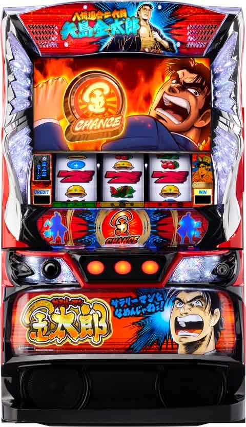
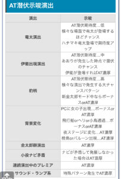

Lサラリーマン金太郎

【天井情報】
AT後、BIG後 999G+α REG後 800G+α
設定変更後 600G+α
【リセット判別】
不明
【有利区間について】
有利区間リセットされると裏金太郎モードに移行し潜伏を経由してAT突入。
有利切れ条件 不明。差枚関係無く、一撃2000枚以上で有利切断され次回天井短縮？
狙い目
【リセット狙い】
140Gから
【天井狙い】
AT後 510Gから
BIG後 510Gから
REG後 360Gから
一撃2000枚以上後 160Gから
※600G+αに天井短縮すると思われる。
【ゾーン狙い】
256Gゾーン
220Gから
※256Gから20Gほど回して煽りが無いようならやめ？
【有利区間切れについて】
有利切れの信号は不明だが明らかに有利切ったであろう直後は600G+αに天井短縮されてそう。
有利切れ後 160Gから
やめ時
ボーナス後高確消化してやめ。
BIG後100G、REG後30-40Gくらい？
AT後は潜伏示唆確認。奇数連チャン後は40-50Gまで。偶数連チャン後は70-80Gまで。
潜伏示唆が出ている場合は奇遇関係なく示唆を見つつ潜伏の有無を確認。
AT状態潜伏示唆

その他
【天井やゾーン当選時の前兆について】
恐らく規定G数を跨いで1-32Gの間に当選告知がある感じ。
リセ天井なら632Gまでに当選。稀に634Gの履歴あり。
5-10G手前から煽りや前兆演出に発展する感じで10-20G手前では煽りが一切無いケースあり。
また、ゾーンの規定G数は256Gとなっているので最大288G当選と思われる。(260-289Gの当選分布が上がっている)
仮に270Gで落ちてる台があったら前兆無しと勘違いしてやめられてる可能性あるので280-288Gくらいまで回す価値あるかも？→実践上270G過ぎで見切られてるケースが多いため、270Gで落ちている台は打たなくて良さそう。（前任者のレベルの影響が大きい）
【一撃2000枚以上後狙い時の注意点】
最後がボーナス当選の場合はAT終了→ボーナス当選となっている可能性があるため、その場合は天井短縮の恩恵が終わっているかもしれない。
最後の履歴がREGの場合天井短縮になっていないケースがある。BIGとATの信号が同一で見極めは難しいが、獲得枚数が300枚前後だとBIGの可能性高いため、最後の履歴が300枚前後の場合も短縮の恩恵が出てこない可能性はありそう。
参考元
基本情報
- メーカー: EXCITE
- 機械割: 97.8% 〜 114.9%
- 導入開始日: 2025年01月06日（月）
- ゲーム性概要: ●懐かしの金太郎がスマスロになって復活！ ●通常時はレア役とゲーム数消化でボーナスを目指す ●高確中のチャンス目でATを目指すゲーム性 ●AT「金太郎チャンス」はチェリー（シングル）ナビ回数管理 ●金チェリーや金太郎ラッシュといった新要素もあり


打ち方
打ち方・小役
打ち方（小役狙い）
［最初に狙う絵柄］

左リール上段にBARを目押し。押した位置によってはハッピが引き込めないが、取りこぼしはない（1枚を獲得する）ので、アバウトでもOKだ。
［ハッピ停止時］

［レア役の停止形］ ※チャンス目時はフラッシュが発生

［チェリー後の択当て］

チェリー成立後は択当てが発生。成功すればAT突入が抽選される。
変則押しはNG
通常時は左1stでの消化を推奨だ。
リーチ目／出目法則
リーチ目例

リーチ目出現時はAT濃厚。ATの潜伏中、前兆中、ガセ前兆中に出現した場合はATストック３個以上濃厚になる。
解析情報通常時
小役関連
小役確率
| 役 | 確率 |
|---|---|
| リプレイ | 1/7.5 |
| 共通チェリー（シングル） | 1/238.3 |
| ハッピ | 1/85.3 |
| 共通＆押し順チェリー合算（シングル） | 1/199.3 |
| チャンス目 | 1/150.3 |
判別不可のチャンス目を含んだチャンス目合算確率
| 設定 | 確率 |
|---|---|
| 1 | 1/147.6 |
| 2 | 1/146.3 |
| 3 | 1/145.0 |
| 4 | 1/143.7 |
| 5 | 1/142.5 |
| 6 | 1/141.2 |
見た目上はハズレ目が停止して、チャンス目が判別不可能なケースもある。チャンス目と同じくボーナスやATを抽選している。
リーチ確率
| 状況（恩恵） | 確率 |
|---|---|
| 通常時（AT初当り濃厚） | 約1/17248 |
| AT前兆中（ストック3個以上） | 約1/1933 |
| 上記2パターン合算 | 約1/1738 |
［ 通常滞在時 /チャンス目］ATorボーナス当選率
| 設定 | AT | ボーナス |
|---|---|---|
| 1 | 0.8% | 37.1% |
| 2 | 1.2% | 37.5% |
| 3 | 1.6% | 37.9% |
| 4 | 2.0% | 38.3% |
| 5 | 2.3% | 38.7% |
| 6 | 2.7% | 39.1% |
［ 高確・超高確滞在時 /チャンス目］ATorボーナス当選率
| 設定 | AT | ボーナス |
|---|---|---|
| 1 | 30.1% | 15.2% |
| 2 | 30.5% | 15.6% |
| 3 | 30.9% | 16.0% |
| 4 | 31.3% | 16.4% |
| 5 | 31.6% | 16.8% |
| 6 | 32.0% | 17.2% |
シンプルに高設定ほどチャンス目時のAT当選率がアップ。高確中と超高確中の当選率は一緒だが、超高確中はAT当選時のストック個数が１１個以上と大幅に優遇される。
［内部状態不問］AT当選率
| 役 | 当選率 |
|---|---|
| ハッピ | 0.4% |
| リーチ目 | 0.4% |
［押し順当て成功時］内部状態別のAT当選率
押し順当て成功時のAT当選率も高設定ほど高い。
内部状態関連
高確・超高確概要

通常時はハッピ成立時やボーナス終了後を契機に高確移行を抽選、リプレイの一部で超高確へ移行。高確以上でのチャンス目やチェリー（シングル）でAT（金太郎チャンス）を目指すゲーム性だ。 高確以上移行時は夕方ステージで示唆される。
高確・超高確性能
| 項目 | 内容 |
|---|---|
| 高確移行契機 | ハッピ成立時の約25%、ボーナス終了後は必ず移行 |
| 超高確移行契機 | リプレイ成立時の抽選 |
| 滞在中の抽選 | チャンス目やチェリーのAT当選率がアップ ※チェリーは次ゲームの押し順当て成功時の期待度 |
| その他 | 夕方ステージ移行で高確以上のチャンス |
高確中のAT当選率 （設定1）
| 役 | 当選率 |
|---|---|
| チェリー後の押し順当て成功（4択） | 約20% |
| チャンス目 | 約30% |
高確・超高確中のAT当選時・平均ストック （設定1）
| 内部状態 | 平均ストック個数 |
|---|---|
| 高確中 | 約4.2個 |
| 超高確中 | 約13個 |
規定ゲーム数
規定ゲーム数消化時のAT抽選
レア役だけでなく、規定ゲーム数消化でもATを抽選。600・800・999Gは内部状態（高確or超高確）を参照してATのストック個数を抽選するため、天井到達前に高確以上へ入れることができればAT複数セットのチャンスだ。
規定ゲーム数のAT当選率分布
| ゲーム数 | BIGorAT後 | REG後 | 設定変更後 |
|---|---|---|---|
| 32G | 低 | 低 | 低 |
| 128G | 低 | 低 | 低 |
| 256G | 高 | 高 | 高 |
| 512G | 中 | 中 | 中 |
| 600G | － | － | 天井 |
| 800G | 中 | 天井 | － |
| 999G | 天井 | － | － |
600G以降の抽選は内部状態を参照してストック個数を抽選する。
256G到達時のAT当選率
| 設定 | 当選率 |
|---|---|
| 1 | 16.8% |
| 2 | 17.1% |
| 3 | 17.5% |
| 4 | 17.8% |
| 5 | 18.1% |
| 6 | 18.5% |
256G到達時のAT当選率は高設定ほど優遇。このゲーム数での当選は少し特殊で、期待度が高いだけでなく内部状態が通常の時に当選しても、強制的に「高確滞在時のテーブル」でATセットストックを抽選する場合がある。当選時の5〜6回でこの強制高確テーブルになるため、自力での高確移行を加味すれば256G狙いはかなりお得と思われる。
［ゲーム数の色で期待度示唆］ 規定ゲーム数消化時はゲーム数表示の色で本前兆期待度を示唆。青になればチャンス、赤なら激アツだ。

［256G到達時］ゲーム数の色別本前兆期待度
| 色 | 期待度 |
|---|---|
| 白 | 約16% |
| 青 | 約51% |
| 赤 | 激アツ |
演出動画
ロングフリーズ
BIG＋AT突入濃厚のプレミアム演出。ATの大量ストックにも期待できる!?
フリーズ
ロングフリーズ


ロングフリーズ発生時は BIG＋ATストック平均12.6個 を獲得できる（最低保証11個）。
解析情報ボーナス時
ボーナス（BIG・REG）
ボーナス性能
| 項目 | BIG | REG |
|---|---|---|
| 当選契機 | レア役時の一部など | |
| 純増 | 約6.0枚/G | |
| 獲得枚数 | 約300枚 | 約60枚 |
| 消化中の抽選 | AT直撃、高確ゲーム数加算 | |
| 終了後 | 高確移行濃厚 | |
| 終了後の高確ゲーム数 | 平均100G | 平均20G |
ボーナスは通常時・AT中不問で抽選され、 終了後は必ず高確へ移行 。ボーナス中はレア役でATストックや高確ゲーム数の上乗せが抽選される。BIG後の高確ゲーム数は平均100Gと長いため、AT当選のチャンスだ。
ボーナス当選時の振り分け
| ボーナス種別 | 振り分け |
|---|---|
| BIG | 50.40% |
| REG | 49.60% |
［BIG］

［REG］

金太郎チャンス（AT）
AT概要

チェリー（シングル）回数管理型AT。初当り時やAT中にセットストックしながら、大量ストックで出玉を増やすという初代に近いゲーム性になる。 複数ストックがある場合、即連チャンor数ゲームの潜伏状態を経て告知 される。 AT中も通常時と同じく内部状態があり、高確中は金太郎ラッシュ（特化ゾーン）当選率がアップ。ボーナス後は高確濃厚、ハッピ成立時は高確移行のチャンスだ。
金太郎チャンス（AT）性能
| 項目 | 内容 |
|---|---|
| 当選契機 | レア役時の一部、規定ゲーム数消化、 ボーナス中の直撃など |
| 純増 | 約4.0枚/G |
| 1セットの平均獲得枚数 | 約240枚 |
| 初当り時の平均ストック | 高確中：4.2個、超高確中：13個 （設定1） |
| チェリーナビ回数 | 5回or10回or30回or100回 |
| 初当り時の最大セット数 | 29セット |
| 消化中の抽選 | チェリーナビ5回ごとに金チェリー抽選、 通常時と同じくボーナスも抽選、 ハッピ成立時はラッシュ高確移行抽選 |
［チェリーナビ］

チェリーのナビ回数は画面左に表示。回数はAT突入のレバーON時に決定する。
回数は振り分けなので、いきなりMAXの100回を獲得できる可能性もある。ナビ回数を消化し切るまでATは継続するため、ベルの引き次第でAT1セットあたりの獲得枚数も変化する。
［金チェリー］

チェリーナビ5回ごとに獲得を抽選する継続率管理タイプのAT状態 。もちろんチェリー回数の減算はストップ、保証回数が 8回 あるため、最低でも100枚以上を加算することができる。
［まだまだぁ！］

基本的にチェリーナビの回数は5個ずつ表示され、継続する場合はシリーズおなじみの「まだまだぁ！」で告知される。
［ラッシュ高確ステージ］

潜伏ゲーム数
AT潜伏中は告知までの平均ゲーム数が「奇数連目or偶数連目」によって変化。 潜伏時の約6.3%で潜伏ゲーム数＋押し順ナビ（1/13.1）が出るまでになる ため、長い潜伏もある（この場合は最大100Gで告知）。 また、潜伏中は 約1/91で告知までのゲーム数を3G以内に短縮する抽選 がおこなわれる。 ちなみに、奇数連目or偶数連目不問で、ボーナス中やAT中にストックした場合は潜伏せずに1GでATへ移行する。
AT潜伏ゲーム数振り分け
| 前兆ゲーム数 | 奇数連目 | 偶数連目 |
|---|---|---|
| 1～4G | 18.0% | 2.0% |
| 5～8G | 25.0% | 9.0% |
| 9～12G | 9.8% | 5.1% |
| 13～16G | 9.8% | 9.0% |
| 17～20G | 12.5% | 12.5% |
| 21～24G | 6.3% | 25.0% |
| 25～28G | 12.5% | 12.5% |
| 29～32G | 6.3% | 25.0% |
AT潜伏の平均ゲーム数
| AT継続回数 | 潜伏するゲーム数 |
|---|---|
| 奇数連目（短縮含まない） | 13.5G |
| 偶数連目（短縮含まない） | 21.3G |
| 平均（短縮含む） | 15.4G |
あくまで平均なので、潜伏示唆演出をしっかりとチェックすることをオススメだ。
潜伏示唆演出はコチラ
ナビ回数振り分け

AT1回ごとのナビ回数振り分け （設定1）
| ナビ回数 | 振り分け |
|---|---|
| 5回 | 33.1% |
| 10回 | 58.1% |
| 30回 | 6.7% |
| 100回 | 2.1% |
ナビ回数は設定によって若干変化!?
ラッシュ高確移行率

ラッシュ高確移行率
| ラッシュ高確ゲーム数 | ボーナス当選後 | ハッピ |
|---|---|---|
| 10G | 95.30% | – |
| 20G | 2.30% | 46.90% |
| 30G | 2.30% | 3.10% |
AT中にボーナスが当選した場合もラッシュ高確へ移行。ハッピは約50%で高確へ移行する。
［ボーナス当選時］金太郎ラッシュ当選率
| 滞在状態 | 当選率 |
|---|---|
| 非ラッシュ高確中 | 0.4% |
| ラッシュ高確中 | 50.0% |
金太郎ラッシュはAT中のボーナス当選時の半分で突入する。
状況別・AT当選時のATストック数振り分け
| 個数 | 通常滞在時 | 高確滞在時 | 超高確滞在時 | 有利区間 移行時 |
|---|---|---|---|---|
| 1個 | 95.25% | 39.84% | － | 12.50% |
| 2個 | 0.39% | 0.39% | － | 0.39% |
| 3個 | 2.96% | 19.63% | － | 64.26% |
| 5個 | 0.33% | 12.23% | － | 18.97% |
| 7個 | 0.35% | 9.21% | － | 2.71% |
| 9個 | 0.34% | 8.16% | － | 0.68% |
| 11個 | 0.34% | 7.90% | 55.47% | 0.43% |
| 13個 | 0.04% | 1.97% | 24.70% | 0.05% |
| 15個 | 各0.01% 以下 | 0.49% | 11.00% | 各0.01% 以下 |
| 17個 | 各0.01% 以下 | 0.12% | 4.90% | 各0.01% 以下 |
| 19個 | 各0.01% 以下 | 0.03% | 2.18% | 各0.01% 以下 |
| 21個 | 各0.01% 以下 | 0.01% | 0.97% | 各0.01% 以下 |
| 23個 | 各0.01% 以下 | 各0.01% 以下 | 0.43% | 各0.01% 以下 |
| 25個 | 各0.01% 以下 | 各0.01% 以下 | 0.19% | 各0.01% 以下 |
| 27個 | 各0.01% 以下 | 各0.01% 以下 | 0.09% | 各0.01% 以下 |
| 29個 | 各0.01% 以下 | 各0.01% 以下 | 0.07% | 各0.01% 以下 |
※有利区間移行時…いわゆるツラヌキ（エンディング到達以外は判別不可）
全状態を加味したAT当選時のATストック割合 （設定1）
| 個数 | 割合 |
|---|---|
| 1個 | 54.11% |
| 2個 | 0.38% |
| 3個 | 21.55% |
| 5個 | 9.14% |
| 7個 | 4.81% |
| 9個 | 3.98% |
| 11個 | 4.35% |
| 13個 | 1.16% |
| 15個 | 0.35% |
| 17個 | 0.11% |
| 19個 | 0.03% |
| 21個 | 0.01% |
| 23個 | 0.01% 以下 |
| 25個 | 0.01% 以下 |
| 27個 | 0.01% 以下 |
| 29個 | 0.01% 以下 |
AT当選時の平均ATストック数
| AT当選時の状況 | 個数 |
|---|---|
| 通常滞在時 | 1.2個 |
| 高確滞在時 | 4.2個 |
| 超高確滞在時 | 12.6個 |
| ロングフリーズ経由 | 12.6個 |
| 有利区間移行時（ツラヌキ） | 3.3個 |
| 平均（設定1） | 3.1個 |
金太郎ラッシュ
金太郎ラッシュ概要

10G/セットのATストック特化ゾーンで、ナビ発生時の約1/2でストックを獲得。BAR揃い時はストック獲得＋10Gが再セットされる。 ここでストックしたATはすべて即放出（潜伏なし）されるため、出玉増加スピードもアップする。
金太郎ラッシュ（特化ゾーン）性能
| 項目 | 内容 |
|---|---|
| 当選契機 | AT中のボーナス当選時の一部 |
| 継続ゲーム数 | 10G＋α |
| 消化中の抽選 | ナビ発生時の一部でATストック獲得、 BAR揃い時はATストック＋10G再セット |
| 平均ストック個数 | 約6.0個 |
| 期待獲得枚数 | 約3400枚 |
| その他 | 終了後はボーナスへ移行 |
［ナビ発生］

チェリー（シングル）停止でストック濃厚！
［BARを狙え］

青文字がデフォルト。赤文字ならチャンス、虹文字ならBAR揃い濃厚だ。
裏 金太郎モード
ATが継続するほど突入しやすいモードで、滞在中のATは チェリーナビ回数30回と100回の選択比率がアップ 。 液晶上で判別することはできないが、いわゆるツラヌキ（非有利区間→有利区間）要素だ。 突入した時点で内部的にAT当選も濃厚となる。
裏金太郎モード性能
| 項目 | 内容 |
|---|---|
| 当選契機 | AT終了後の一部（有利区間リセット） |
| 恩恵 | チェリーナビ30回と100回の選択率アップ |
| 終了条件 | AT終了まで（ストックが切れるまで） |
| その他 | 連チャンするほど チェリーナビ100回が選択されやすい |
裏金太郎モード中のATセット数振り分け
| セット数 | 振り分け |
|---|---|
| 1セット | 12.50% |
| 2セット | 0.39% |
| 3セット | 64.26% |
| 5セット | 18.97% |
| 7セット | 2.71% |
| 9セット | 0.68% |
| 11セット | 0.43% |
| 13セット | 0.05% |
| 15セット | 0.01%以下 |
| 17セット | 0.01%以下 |
| 19セット | 0.01%以下 |
| 21セット | 0.01%以下 |
| 23セット | 0.01%以下 |
| 25セット | 0.01%以下 |
| 27セット | 0.01%以下 |
| 29セット | 0.01%以下 |
※平均3.3セット
裏金太郎モード当選時（初回滞在中）は、ATのストックがなくなった段階で、上記の振り分けでセット数を抽選。セット数がなくなった時に、再度AT突入（裏金太郎モード継続）が抽選され、当選すれば再び上記の振り分けでセット数を獲得できる。
裏金太郎モードの継続率（終了後のATの再当選）
高設定ほど継続しやすいため、ATロング継続に期待できる。
ナビ回数振り分け
| ナビ回数 | 振り分け |
|---|---|
| 5回 | 27.3% |
| 10回 | 53.9% |
| 30回 | 9.4% |
| 100回 | 9.4% |
10回を超えれば、1/2で100ナビになるので要注目だ。
ツラヌキ・有利区間
ツラヌキ条件と恩恵
| 項目 | 内容 |
|---|---|
| 条件 | AT終了時の一部、エンディング終了後 |
| 恩恵 | 裏 金太郎モードへ移行 裏 金太郎モード詳細はコチラ |

基本的にどこで有利区間が切れたかは見た目上判別しにくいが、エンディングに行った場合のみ判別できる。
厳密なシステムを説明すると、エンディングは、有利区間の差枚数が2200枚以上になった時にボーナス中や金太郎チャンス消化中だった場合、エンディングに移行。 MYが2000枚を超えた状態でATのストックがなくなった場合は、有利区間を切って裏金太郎モードに突入するため、エンディングへは移行しない。
ボーナス
ボーナス中・ハッピ契機の高確ゲーム数上乗せ振り分け
| 高確ゲーム数 | 振り分け |
|---|---|
| 10G | 84.40% |
| 15G | 12.50% |
| 20G | 1.60% |
| 30G | 1.60% |
※ハッピは約25%で高確に当選
ハッピ時は約25%で高確ゲーム数を上乗せして、上記の数値でゲーム数がボーナス終了後の高確に加算される。
ボーナス契機の高確ゲーム数
| 契機 | 高確ゲーム数 |
|---|---|
| BIG後 | 平均100G継続 |
| REG後 | 平均20G継続 |
※ボーナス後は必ず高確へ移行
ボーナス後は高確移行濃厚。BIG後は平均100G継続する。
チャンス目成立時のAT当選率
| 契機 | 当選率 |
|---|---|
| チャンス目 | 5.0% |
演出情報
こちら開発！ギンギン情報局!!
ギンギン情報局

↑ここからギンギン情報局へアクセス！
演出モード
演出モード解説

初代を完全踏襲したクラシックモードだけでなく、新たな要素が盛り込まれた新金太郎モードも搭載されている。
通常時
ステージ解説
| ステージ | 示唆 |
|---|---|
| 昼ステージ | デフォルト |
| 夕方ステージ | 高確・超高確示唆 |
| 夜ステージ | AT潜伏濃厚 |
［昼ステージ］

［夕方ステージ］

［夜ステージ］

［会社の時間変化は1G固定の示唆］

昼ステージ（会社背景）で夕方や夜に変化するのはAT潜伏を示唆する1G固定の示唆演出扱い。夕方はボーナス当選中orAT潜伏、夜はAT潜伏濃厚となる。
高確以上示唆

夕方ステージに行かなくても、金太郎の眉毛が動いたり、指をトントンしていれば高確滞在の可能性ありだ。
青テンチャンス
青テンチャンス解説

発生した時点でボーナスorATの大チャンス。青7が上段テンパイすればボーナスorAT濃厚となる。
AT潜伏示唆
AT潜伏示唆演出
| 演出 | 示唆 |
|---|---|
| 竜太演出 | ● AT潜伏期待度：低 ● 様々な場面で竜太が登場するほどチャンス ● ハチマキ竜太登場でストック5個以上 |
| 伊能出現演出 | ● AT潜伏期待度：中 ● あおりが発生した時点で潜伏のチャンス ● 伊能が登場すればAT濃厚 |
| 豹柄 | ● AT潜伏期待度：高 ● 様々な演出で発生する大チャンスパターン ● 新金太郎モード中ならボーナスorAT濃厚 |
| 背景変化 | ● PCに女の子出現：ボーナスorAT濃厚 ● 飛行船orヘリor小鳥通過：ボーナスorAT濃厚 ● 夜ステージに変化：AT濃厚 ● 橙鳥orバルーン出現：AT濃厚 |
| 金太郎群演出 | ● AT濃厚 |
| 小役ナビ矛盾 | ● ナビが矛盾して発展しなかった場合はAT濃厚 |
| 連続演出中のプレミア | ● AT濃厚 |
| サウンド・ランプ系 | ● 特殊パターン発生でAT濃厚 |
連続演出中のプレミア
| 連続演出 | パターン |
|---|---|
| いそげ!!金太郎!! ［犬救出］ | 2G目に金太郎溺れる →背景を魚群が通過 |
| いそげ!!金太郎!! ［喧嘩］ | 2G目チンピラを倒す →背景に金太郎の父親が居る |
| いそげ!!金太郎!! ［火事］ | 2G目で子ども発見 →背景に金太郎のコミックがある |
| 男のロマンだ!!金太郎!! | 三田がバニーガールの耳を持っている |
| ケンカだ!!金太郎!! | 倒れた金太郎の傍に椎名のサングラス出現 |
| 伝説の大暴走 | 発生した時点でAT濃厚 |
サウンド・ランプ系の特殊パターン
| パターン | 詳細 |
|---|---|
| リールフラッシュ | レバーONでリールフラッシュが 発生したのにチャンス目を否定 |
| 無音スタート | スタート音が無音 |
| スペシャル停止音 | リール停止ごとに「ガシャン」音が発生 |
| プレミアムスタートボイス | レバーON時に特殊ボイスが発生 |
| チャンス目成立時PUSH | チャンス目成立時にPUSHボタンを押すと パネル右の金太郎＆竜太ランプが点灯 |
| 潜伏中PUSH | PUSHボタンを押して 竜太ボイス＋金太郎チャンスランプが点滅 |
| PUSHボタン振動 | PUSHボタンバイブが発生 |
| 下パネル消灯 | 下パネル消灯 |
金太郎の醍醐味でもあるAT潜伏示唆は今回も多数存在する。
［竜太演出］


ハチマキ竜太なら潜伏濃厚かつストック5個以上！
［伊能出現演出］

［豹柄］


高確率でボーナスorATになるがハズレもあるので注意。新金太郎モード選択時は濃厚になる。
［背景変化］

［金太郎群演出］

［連続演出中のプレミア告知］

ボーナス終了画面のATストック数示唆
| 画面 | 示唆 |
|---|---|
| 叫ぶ | AT複数ストック示唆［弱］ |
| 椎名 | AT複数ストック示唆［中］ |
| 美鈴 | AT複数ストック示唆［強］ |
| 美鈴＆美々 | AT複数ストック濃厚（大量） |
ボーナス終了画面でPUSHボタンを押すと画面が切り替わってATの残りストック数が示唆。一部で設定も示唆される。
設定示唆系の画面はコチラ
［叫ぶ］
［椎名］
［美鈴］
［美鈴＆美々］
AT終了画面のボイス

AT終了画面でPUSHボタンを押してボイスが発生すればATのストックありが濃厚。ボイスと一緒にリール下部の金CHANCEランプが点灯した場合はセット継続（残りナビがあり）濃厚となる。
AT終了画面のボイス別示唆
| キャラ | ボイス内容 | 示唆 |
|---|---|---|
| 竜太 | パパ～ | ストック1個以上 |
| 美鈴 | 私・・・小娘に なっちゃったみたい・・・ | ストック3個以上 |
| 明美 | 金ちゃんの奥さんになれて 本当に幸せだった… | ストック5個以上 |
［金CHANCEランプ］

ボーナス（BIG・REG）
ハッピ時のボイス
ボーナス中、ハッピが揃った時に「やってやら～！」ボイスが発生すれば高確ゲーム数上乗せの期待大（平均期待度約84%）。 第3停止ボタンを離した時に発生すれば上乗せ期待度約82%、BET時なら＋20G以上濃厚となる。

金太郎チャンス（AT）
金太郎チャンスアイコン
金太郎ルーレットで金色の金太郎チャンスのアイコンを獲得した場合はATストック5個以上濃厚。金太郎ラッシュ中の金アイコンはストック2個以上となる。